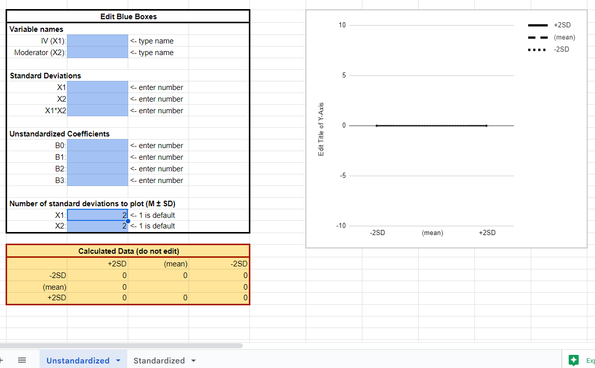
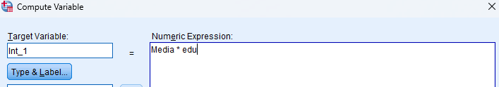
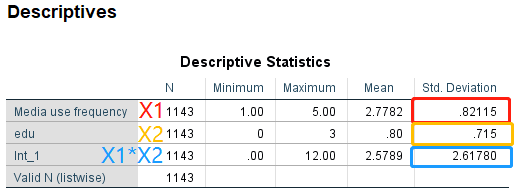
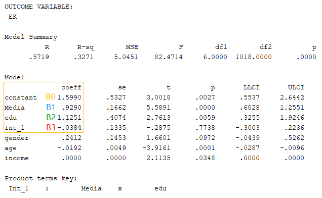
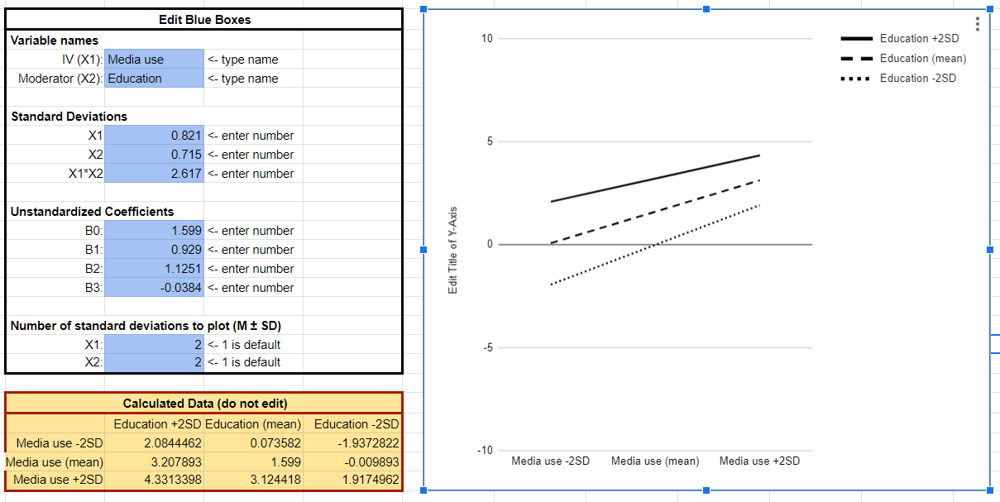

This tutorial is not planned because a friend just asked me about this tool. I think it would be better to write her about the detailed steps.
She is using the tool for plotting two way interaction effect developed by mu supervisor.The results are gotten by PROCESS Macro Model 1.
I continue using the same sample data about environmental knowledge to demonstrate this.
Regression model:$ Environmental knowledge = \B_{0} + \B_{1} Media use + \B_{2} Education + \B_{3} Media use \times Education + \B_{4} gender+ \B_{5} age + \B_{6} income + \varepsilon $
In PROCESS results below, it is equivalent to $EK = constant + \B_{1} Media + \B_{2} edu + \B_{3} Int_1 + \B_{4} gender+ \B_{5} age + \B_{6} income + \varepsilon $

Then we get the results like below:

Noted that the PROCESS results are unstandardized because there’s a constant term. So for the tool that I shared, I need to use the unstandardized sheet.

I also need to calculate the standard deviations (SD) of my IV (Media use), moderator (Education), and the interaction term (Int_1).
I need to calculate the interaction term first. Using SPSS -> transform -> compute variables

The SPSS Analyze -> descriptive statistics -> descriptive, enter Media, edu, and Int_1:

So enter the names, SDs, and the coefficients (from PROCESS results)

Enter these numbers, then we can get the plot
